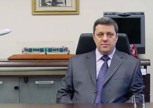
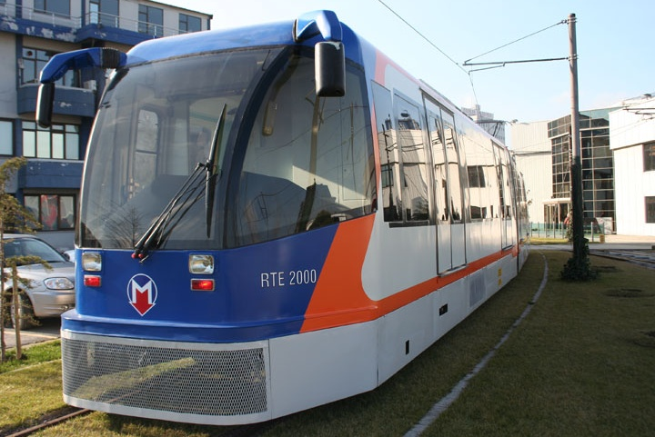

Ýlgili diðer haberler
Ýstanbul Ulaþým A.Þ.'de Görev Deðiþimi, Ulaþým Web - 14-11-2007
Ýstanbul Ulaþým A.Þ. Genel Müdürlüðü görevine ÝSBAK A.Þ. Genel Müdür Yardýmcýsý Sayýn Ömer YILDIZ atandý. 1997-2005 arasýnda Ýstanbul Ulaþým A.Þ.'de Genel Müdür Yardýmcýlýðý görevini de yürüten YILDIZ, Ýlk yerli tramvay geliþtirme projesi RTE 2000 ve Vezneciler-Sultançiftliði, Kadýköy-Kartal, Üsküdar-Ümraniye ve Güngören-Baðcýlar raylý sistem projelerinin fizibilite raporlarýnýn hazýrlanmasý gibi projelere imza attý.
1982'de ÝTÜ Makine Fakültesi Uçak Mühendisliði bölümünden mezun olan 1985-1993 dönemleri arasýnda A.B.D. Michigan Üniversitesi Uzay ve Havacýlýk bölümünde yüksek lisans ve doktora çalýþmalarý yapan YILDIZ, 1993-1998 dönemleri arasýnda ÝTÜ Fen Bilimleri Enstitüsü Uçak Mühendisliði bölümünde doktora çalýþmalarýna devam etti. 1997-2005 dönemleri arasýnda 8 yýl boyunca Ýstanbul Ulaþým A.Þ.'de Genel Müdür Yardýmcýsý olarak çalýþan YILDIZ, 2005-2007 dönemleri arasýnda Ýstanbul Büyükþehir Belediyesi ÝSBAK A.Þ.'de Genel Müdür Yardýmcýsý olarak görev yaptý. 13 Kasým 2007 tarihinde Ýstanbul Ulaþým A.Þ.'ye Genel Müdür olarak atanan YILDIZ evli ve 3 çocuk babasýdýr.
Yerli Tramvay Aracý RTE 2000 Yeniden Seferde,
Ulaþým Web - 21.02.2007
Ulaþým A.Þ. tesislerinde imal edilen ülkemizin "Ýlk ve Tek" Yerli Tramvay Aracý niteliðindeki RTE 2000 aracý 18 Þubat 2007 Pazar Günü itibarýyla Zeytinburnu - Baðcýlar Tramvay Hattýnda aðýr bakýmý yapýlarak yeni renkleri ile yolculu iþletmeye tekrar baþlamýþtýr.

RTE 2000 aracý; Ýstanbul Ulaþým A.Þ. Esenler bakým atölyeleri içerisinde prototip olarak imal edilmiþ ve Haziran 2004 tarihine kadar yolculu iþletmede toplam 173.000 km yol yapmýþ ilk yerli üretim tramvay aracýdýr. 2004 yýlýnda düþük tabanlý tramvay araçlarýnýn hizmete verilmesi ile beraber; RTE 2000 aracý da seferden alýnarak Esenler Depo sahasýna çekilmiþti.
Ýstanbul Ulaþým A.Þ. atölye birimlerinin "RTE 2000 aracýný yolculu iþletmeye hazýr hale getirip yeniden servise vermek, serviste max. düzeyde tutmak ve bu vesile ile yerli üretimin desteklenmesine katký saðlamak" hedefi ile 2007 projeleri arasýnda yer alan çalýþma böylece gerçekleþtirilmiþ oldu. Ayrýca, ülkemizde yapýlan ilk Yerli Tramvay Aracý niteliðindeki bu aracýn çalýþtýrýlmasý ile; Ýstanbul Ulaþým A.Þ.' nin daha çok tanýnmasý ve aracýn yolculu iþletmedeki tecrübelerinin yerli mühendisliðe kazandýrýlmasý da hedeflenmiþtir.
Bu hedefler doðrultusunda; RTE 2000 aracýnýn üretiminde ve tekrar servise hazýr hale getirilmesinee katkýda bulunarak yoðun emek sarf eden tüm mesai arkadaþlarýmýza teþekkür eder, RTE 2000' in yerli sanayi ve mühendisliðin geliþimine katkýda bulunmasýný temenni ederiz.
TurkCADCAM.net portalýnda yayýnlanmýþ, ilgili haberler:
|